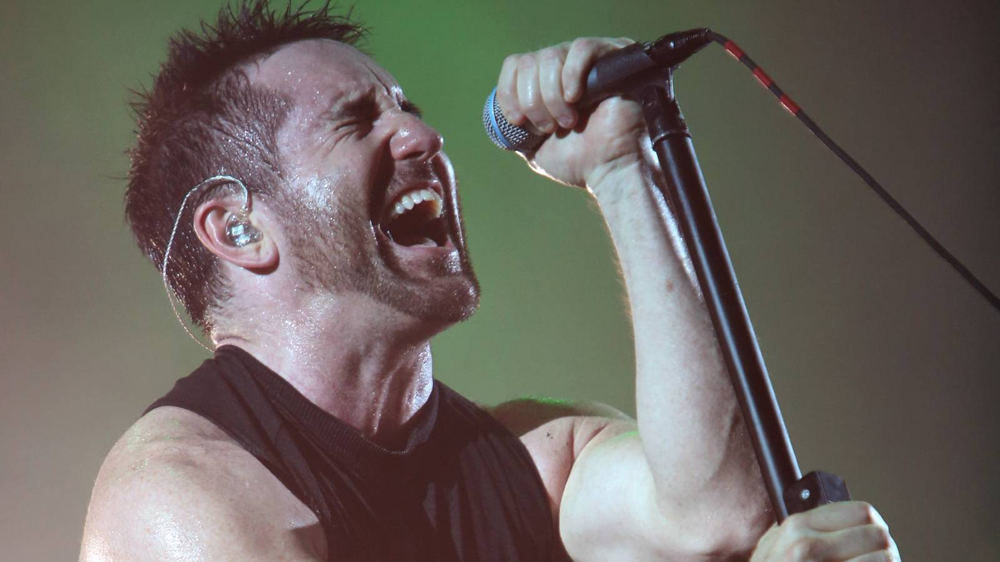

The Downward Spiral: Nine Inch Nails' Industrial Masterpiece Redefined Rock
{kind=link}

"Nothing can stop me now," Nine Inch Nails frontman Trent Reznor whispers during the opening moments of his 1994 industrial-rock magnum opus The Downward Spiral. The words are spoken with a hint of menace, hinting at the album's infamous (and controversial) conceptual exploration of nihilism and self-destruction—but they might as well have referenced Reznor's juggernaut music career that he embarked upon following the release of his ground-breaking sophomore album (indeed, nothing could stop him).
The Downward Spiral arrived after a period of discontent for Reznor. His 1998 debut album, Pretty Hate Machine, launched him into something closer to synth-pop stardom (which he'd lacquered with a steely finish of crunchy industrial rock).
Yet Reznor yearned for a heavier sound, less than impressed with his label TVT Records, which had pressured him to churn out another album of radio-friendly hits. On his follow-up mini-album, Broken, Reznor defiantly embraced a heavier guitar-focused sound, though on The Downward Spiral, he really aimed for the sky, pursuing a sound that was far more sophisticated, textured, and ambitious.
Successful to a profound degree, The Downward Spiral is often counted among the greatest albums of all time, not to mention one of the truly great concept albums that stands tall alongside the big daddies like Pink Floyd's Dark Side of the Moon. Reznor was told his abrasive new sound sported far less commercial potential, though paradoxically, The Downward Spiral proved a huge commercial success that sold in excess of four million copies. The album remains a staple of Nine Inch Nails' live shows to this day.
Reznor Found His True Creative Voice On The Downward Spiral
Reznor's debut, Pretty Hate Machine, showcased his talent for laying down pop harmonies, while Broken proved him equally adept at bashing out abrasive heavy-metal noise. Both of these tendencies are intact on The Downward Spiral, fused into a cohesive whole that truly shines alongside Reznor's incredible sound design and grasp of music technology. The album opens on a note of piercing white noise and savage heavy-metal riffage with "Mr. Self Destruct", setting its intentions with explosive confidence. It also thematically sets the scene for this sprawling conceptual effort, diving straight into its themes of mental decay, and... you guessed it, self-destruction.
The Downward Spiral is a definitive release for the industrial rock genre, though it's an album that refuses to be constrained by these aesthetics. The strange and melancholic "Piggy" is arguably the best showcase for the album's scope. Beginning on an introspective note where Reznor reveals his more vulnerable side, the industrial influences nonetheless lurk at the fringes as the song builds in tension and danger, before exploding with a powerhouse drum solo in its conclusion that recalls Phil Collins' iconic "In The Air Tonight" (as much as you'd never think to mention these two artists in the same sentence). It's deranged and inspired, unhinged and brilliant.
The Downward Spiral Makes The Perfect Argument For The Concept Album's Existence
Reznor waded into the realm of the oft-maligned 'concept album' on his sophomore long player, though on The Downward Spiral, he works with the format for inspired results. Pretty Hate Machine flirted with notions of dark obsession and despair, though Reznor doubles down on its follow-up for a narrated journey through the blackest realms of mental anguish, suicide, the loss of oneself to the existential abyss, a nihilistic rejection of god... You name it (witness the notoriously controversy-courting "Big Man With A Gun").
Some moments offer a hint of redemption, particularly the haunting ambient instrumental "A Warm Place," where Reznor briefly releases the tension. Though it's a prelude to the rising industrial chaos of "Eraser" and "Reptile" that drives the album towards its conclusion (and takes the listener to some very dark places). All this angst sounds remarkably convincing, and it's not surprising to discover that it's reflected in Reznor's own real-life struggles with mental illness and addiction (fortunately, he lived on to shake off his demons).
In truth, it's not particularly controversial to argue that The Downward Spiral is Nine Inch Nails' and Trent Reznor's best album, an unmistakable masterpiece and a stunning achievement for an artist so early in his career. What's equally impressive, though, is that despite it being Nine Inch Nails' best album, it didn't see Reznor peaking early as an artist. In the years since, he's remained consistent with killer albums, like The Fragile, With Teeth, and Year Zero, where he's broken new ground and explored fresh, exciting sounds.
He's the sort of artist who regularly shadow-drops ambient albums (see his Ghosts anthology), curates the soundtracks of visionary directors like David Lynch and Oliver Stone, and more recently, enjoying a third-act hot streak as a soundtrack composer alongside his musical partner in crime Atticus Ross (even taking home an Academy Award for 'Best Original Score' in 2011 for The Social Network).